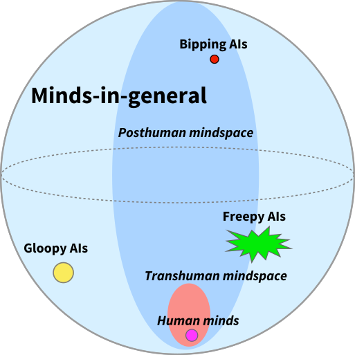

The Design Space of Minds-in-General
❦
People ask me, “What will Artificial Intelligences be like? What will they do? Tell us your amazing story about the future.”
And lo, I say unto them, “You have asked me a trick question.”
ATP synthase is a molecular machine—one of three known occasions when evolution has invented the freely rotating wheel—that is essentially the same in animal mitochondria, plant chloroplasts, and bacteria. ATP synthase has not changed significantly since the rise of eukaryotic life two billion years ago. It’s something we all have in common—thanks to the way that evolution strongly conserves certain genes; once many other genes depend on a gene, a mutation will tend to break all the dependencies.
Any two AI designs might be less similar to each other than you are to a petunia. Asking what “AIs” will do is a trick question because it implies that all AIs form a natural class. Humans do form a natural class because we all share the same brain architecture. But when you say “Artificial Intelligence,” you are referring to a vastly larger space of possibilities than when you say “human.” When people talk about “AIs” we are really talking about minds-in-general, or optimization processes in general. Having a word for “AI” is like having a word for everything that isn’t a duck.
Imagine a map of mind design space… this is one of my standard diagrams…

All humans, of course, fit into a tiny little dot—as a sexually reproducing species, we can’t be too different from one another.
This tiny dot belongs to a wider ellipse, the space of transhuman mind designs—things that might be smarter than us, or much smarter than us, but that in some sense would still be people as we understand people.
This transhuman ellipse is within a still wider volume, the space of posthuman minds, which is everything that a transhuman might grow up into.
And then the rest of the sphere is the space of minds-in-general, including possible Artificial Intelligences so odd that they aren’t even posthuman.
But wait—natural selection designs complex artifacts and selects among complex strategies. So where is natural selection on this map?
So this entire map really floats in a still vaster space, the space of optimization processes. At the bottom of this vaster space, below even humans, is natural selection as it first began in some tidal pool: mutate, replicate, and sometimes die, no sex.
Are there any powerful optimization processes, with strength comparable to a human civilization or even a self-improving AI, which we would not recognize as minds? Arguably Marcus Hutter’s AIXI should go in this category: for a mind of infinite power, it’s awfully stupid—poor thing can’t even recognize itself in a mirror. But that is a topic for another time.
My primary moral is to resist the temptation to generalize over all of mind design space.
If we focus on the bounded subspace of mind design space that contains all those minds whose makeup can be specified in a trillion bits or less, then every universal generalization that you make has two to the trillionth power chances to be falsified.
Conversely, every existential generalization—“there exists at least one mind such that X”—has two to the trillionth power chances to be true.
So you want to resist the temptation to say either that all minds do something, or that no minds do something.
The main reason you could find yourself thinking that you know what a fully generic mind will (won’t) do is if you put yourself in that mind’s shoes— imagine what you would do in that mind’s place—and get back a generally wrong, anthropomorphic answer. (Albeit that it is true in at least one case, since you are yourself an example.) Or if you imagine a mind doing something, and then imagining the reasons you wouldn’t do it—so that you imagine that a mind of that type can’t exist, that the ghost in the machine will look over the corresponding source code and hand it back.
Somewhere in mind design space is at least one mind with almost any kind of logically consistent property you care to imagine.
And this is important because it emphasizes the importance of discussing what happens, lawfully, and why, as a causal result of a mind’s particular constituent makeup; somewhere in mind design space is a mind that does it differently.
Of course, you could always say that anything that doesn’t do it your way is “by definition” not a mind; after all, it’s obviously stupid. I’ve seen people try that one too.